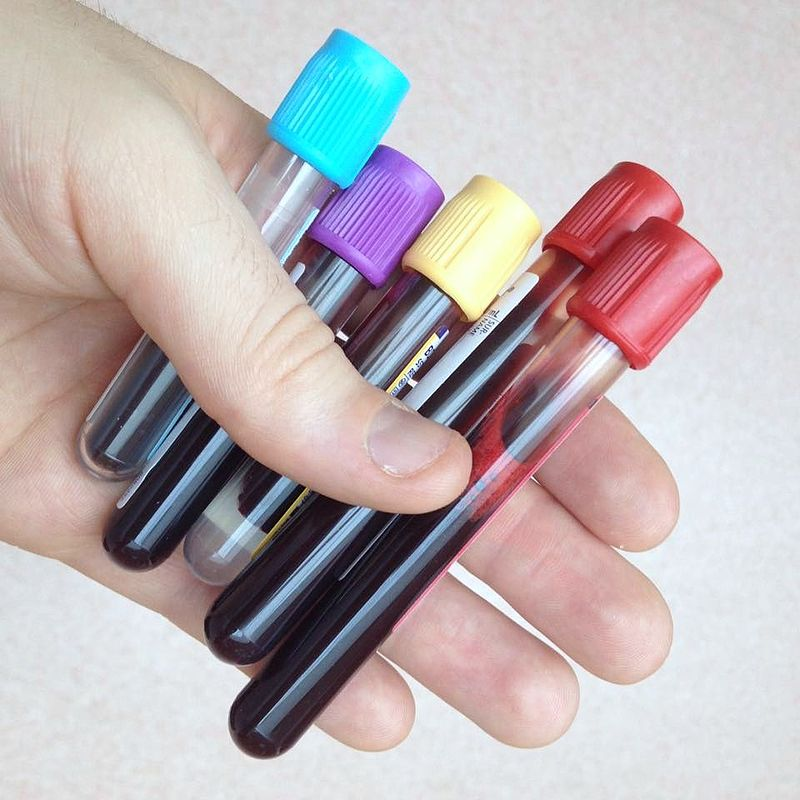

A new Advanced Blood Testing system which allows the doctor to Find all diseases in the human Body
A venipuncture is useful as it is a minimally invasive way to obtain cells and extracellular fluid (plasma) from the body for analysis. Blood flows throughout the body, acting as a medium which provides oxygen and nutrients to tissues and carries waste products back to the excretory systems for disposal. Consequently, the state of the bloodstream affects, or is affected by, many medical conditions. For these reasons, blood tests are the most commonly performed medical tests.
If only a few drops of blood are needed, a fingerstick is performed instead of a venipuncture. Phlebotomists, laboratory practitioners and nurses are those in charge of extracting blood from a patient. However, in special circumstances, and emergency situations, paramedics and physicians extract the blood. Also, respiratory therapists are trained to extract arterial blood to examine arterial blood gases.
For the majority of tests, blood is usually obtained from the patient's vein. Other specialized tests, such as the arterial blood gas test, require blood extracted from an artery. Blood gas analysis of arterial blood is primarily used to monitor carbon dioxide and oxygen levels related to pulmonary function, but is also used to measure blood pH and bicarbonate levels for certain metabolic conditions.
Turkey pork loin ham hock, chicken flank beef short ribs meatball kielbasa tail prosciutto rump corned beef. Turducken cow shankle, swine fatback ribeye filet mignon. Shoulder meatball cow, t-bone pastrami sausage pork bacon swine ground round chuck short ribs. Boudin swine meatball spare ribs ground round fatback jerky sausage beef flank.
While the regular glucose test is taken at a certain point in time, the glucose tolerance test involves repeated testing to determine the rate at which glucose is processed by the body. In 2008, scientists announced that the more cost effective saliva testing could eventually replace some blood tests, as saliva contains 20% of the proteins found in blood. Saliva testing may not be appropriate or available for all markers. For example, lipid levels can't be measured with saliva testing.